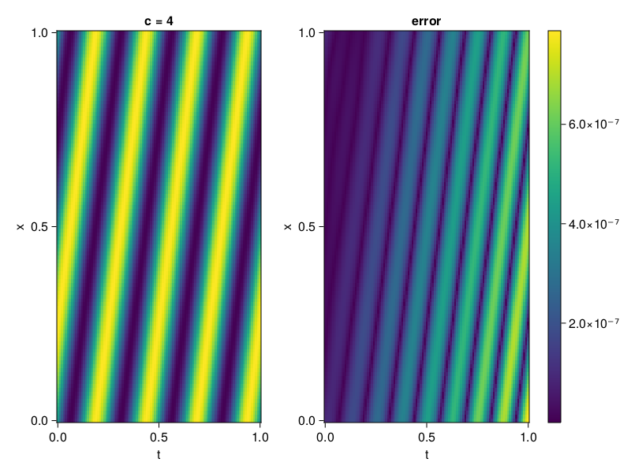

1D Convection Equation
Consider the following 1D-convection equation with periodic boundary conditions.
\[\begin{aligned} &\frac{\partial u}{\partial t}+c \frac{\partial u}{\partial x}=0, x \in[0,1], t \in[0,1] \\ &u(x, 0)=sin(2\pi x) \\ \end{aligned}\]
First we define the PDE.
using NeuralPDE, Lux, Random, Sophon, IntervalSets, CairoMakie
using Optimization, OptimizationOptimJL, OptimizationOptimisers
@parameters x, t
@variables u(..)
Dₜ = Differential(t)
Dₓ = Differential(x)
c = 4
eq = Dₜ(u(x,t)) + c * Dₓ(u(x,t)) ~ 0
u_analytic(x,t) = sin(2π*(x-c*t))
domains = [x ∈ 0..1, t ∈ 0..1]
bcs = [u(x,0) ~ u_analytic(x,0)]
@named convection = PDESystem(eq, bcs, domains, [x,t], [u(x,t)])\[ \begin{align} 4 \mathrm{\frac{d}{d x}}\left( u\left( x, t \right) \right) + \mathrm{\frac{d}{d t}}\left( u\left( x, t \right) \right) =& 0 \end{align} \]
Imposing periodic boundary conditions
We will use BACON to impose the boundary conditions. To this end, we simply set period to be one.
chain = BACON(2,1; hidden_dims = 32, num_layers=5, period = 1, N = 5)MultiplicativeFilterNet(
filters = BranchLayer(
filter_1 = DiscreteFourierFeature(2 => 32), # 32 parameters, plus 64
filter_2 = DiscreteFourierFeature(2 => 32), # 32 parameters, plus 64
filter_3 = DiscreteFourierFeature(2 => 32), # 32 parameters, plus 64
filter_4 = DiscreteFourierFeature(2 => 32), # 32 parameters, plus 64
filter_5 = DiscreteFourierFeature(2 => 32), # 32 parameters, plus 64
),
linear_layers = PairwiseFusion(
Base.Broadcast.BroadcastFunction{typeof(*)}(*)
layer_1 = Dense(32 => 32), # 1_056 parameters
layer_2 = Dense(32 => 32), # 1_056 parameters
layer_3 = Dense(32 => 32), # 1_056 parameters
layer_4 = Dense(32 => 32), # 1_056 parameters
),
output_layer = Dense(32 => 1), # 33 parameters
) # Total: 4_417 parameters,
# plus 320 states, summarysize 240 bytes.For demonstration purposes, the model is also periodic in time
discretization = PhysicsInformedNN(chain, QuasiRandomTraining(300); adaptive_loss = NonAdaptiveLoss(; bc_loss_weights = [100]))
prob = discretize(convection, discretization)
@time res = Optimization.solve(prob, Adam(); maxiters = 2000)u: ComponentVector{Float64}(filters = (filter_1 = (bias = [-2.426990805928067; -0.9532386048702162; … ; 0.730617264535996; 1.7333703318226539;;]), filter_2 = (bias = [2.629273675984149; -2.607161987563223; … ; 0.2725223954992435; 2.4950123522924144;;]), filter_3 = (bias = [-2.788353956164051; 2.28107137702133; … ; -2.926747991508464; 0.307070541430998;;]), filter_4 = (bias = [-0.11323381159038384; -0.2828854392674046; … ; -1.0369959377760622; -0.9151810955171894;;]), filter_5 = (bias = [2.458964286415862; -3.143702130019099; … ; -0.2327606697968743; -2.521713866609816;;])), linear_layers = (layer_1 = (weight = [0.29459203857060073 -0.1505568957867188 … -0.03482694381319453 -0.27480248132202056; -0.3205122836713345 0.2450603203345035 … -0.37104924667258155 -0.07532250224516382; … ; -0.1645960648622149 0.2844994431934588 … 0.36243013828375875 0.243916264818708; 0.13714064368132403 -0.29623891191990037 … -0.3629367575295406 -0.06365071767336393], bias = [0.02394050664482069; 0.023697087467183426; … ; -0.018651974957485135; -0.005915191328146822;;]), layer_2 = (weight = [0.39275696673943883 0.1906875438095723 … -0.14823911739500237 -0.1780970394999182; 0.3569979035811783 -0.2166801396303713 … -0.20129716150125837 -0.12515003689478366; … ; -0.5371619173067038 -0.3422007019674639 … -0.035085726874104946 -0.15184633865462924; -0.47882097711938243 -0.28547361631456064 … -0.32376660459573603 0.06735458931655859], bias = [-0.011699371869801634; 0.01291391739780201; … ; 0.015221076306149049; -0.019899950864556665;;]), layer_3 = (weight = [0.1369853078313941 0.16116755964481194 … -0.2714363256768359 0.36471848233342935; -0.12548517894449082 -0.13170427091907602 … 0.1650236900302404 0.030058038138064593; … ; -0.09022538937170332 -0.28859566679807397 … 0.1794709439468499 0.23966834053884686; -0.031803514595001685 -0.08145566245493835 … 0.2808102295842829 0.1971381205053308], bias = [0.001508834563108879; 0.006891760763216671; … ; 0.013846336863974453; -0.009577614952782313;;]), layer_4 = (weight = [-0.21171838327709316 0.12019641350075069 … 0.36549016289016056 -0.035752936116206176; -0.1556139946022815 -0.2016056353946486 … -0.33240926242967717 -0.2800013452986109; … ; 0.37210733809933133 0.2881689850931687 … 0.32804605607871534 -0.39839134760665745; -0.3508852368073614 0.13508865189988223 … 0.3844567378492003 -0.4043148329687421], bias = [0.0843139078540937; 0.01469285612187043; … ; 0.05076079024613997; -0.010871742255555301;;])), output_layer = (weight = [0.28884438618754127 -0.10176751481987752 … 0.15462199638979487 0.31101901424205064], bias = [-0.05090776078387958;;]))Let's visualize the result.
phi = discretization.phi
xs, ts= [infimum(d.domain):0.01:supremum(d.domain) for d in domains]
u_pred = [sum(phi([x,t],res.u)) for x in xs, t in ts]
u_real = u_analytic.(xs,ts')
fig, ax, hm = CairoMakie.heatmap(ts, xs, u_pred', axis=(xlabel="t", ylabel="x", title="c = $c"))
ax2, hm2 = heatmap(fig[1,end+1], ts,xs, abs.(u_pred' .- u_real'), axis = (xlabel="t", ylabel="x", title="error"))
Colorbar(fig[:, end+1], hm2)
We can verify that our model is indeed, periodic.
xs, ts= [infimum(d.domain):0.01:supremum(d.domain)*2 for d in domains]
u_pred = [sum(phi([x,t],res.u)) for x in xs, t in ts]
fig, ax, hm = CairoMakie.heatmap(ts, xs, u_pred', axis=(xlabel="t", ylabel="x", title="c = $c"))
Respecting causality
CausalTraining will only start optimizing the loss of the succeeding time after the loss of the preceding time has been optimized.
discretization = PhysicsInformedNN(chain, CausalTraining(300; epsilon = 0.1); adaptive_loss = NonAdaptiveLoss(; bc_loss_weights = [100]))
prob = discretize(convection, discretization)
@time res = Optimization.solve(prob, Adam(); maxiters = 2000)
phi = discretization.phi
xs, ts= [infimum(d.domain):0.01:supremum(d.domain) for d in domains]
u_pred = [sum(phi([x,t],res.u)) for x in xs, t in ts]
u_real = u_analytic.(xs,ts')
fig, ax, hm = CairoMakie.heatmap(ts, xs, u_pred', axis=(xlabel="t", ylabel="x", title="c = $c"))
ax2, hm2 = heatmap(fig[1,end+1], ts,xs, abs.(u_pred' .- u_real'), axis = (xlabel="t", ylabel="x", title="error"))
Colorbar(fig[:, end+1], hm2)622.512856 seconds (136.35 M allocations: 130.370 GiB, 1.36% gc time, 10.99% compilation time)